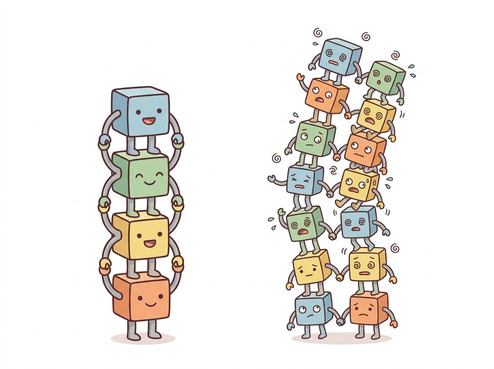
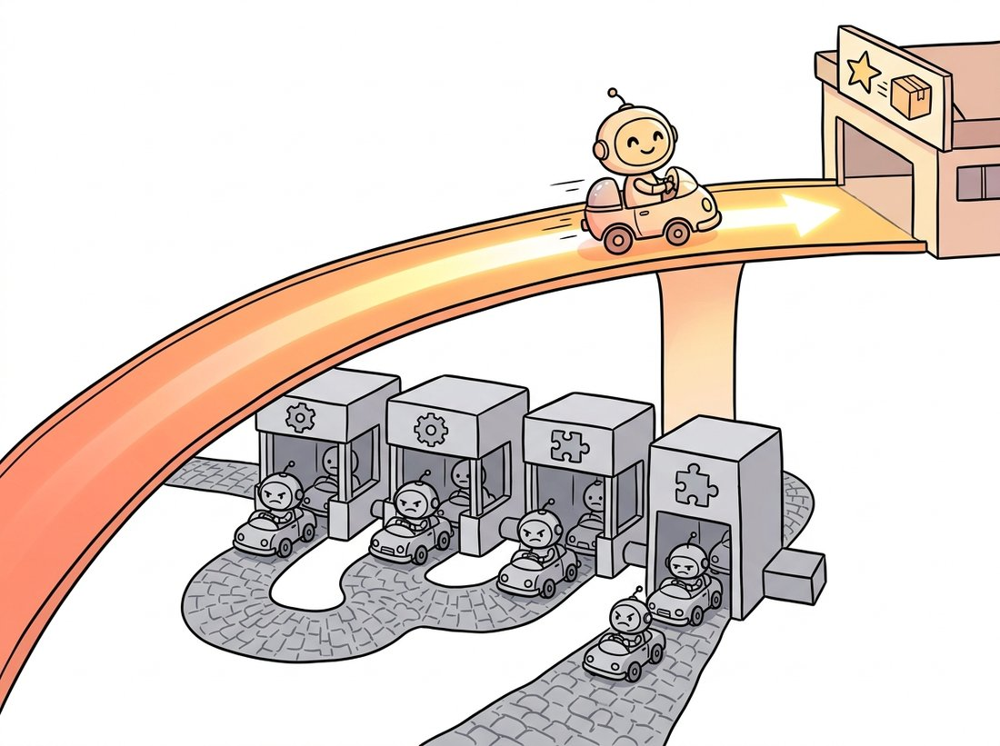

"They asked me to learn a function. I said: let me learn only the part you got wrong, and pass the rest along untouched. Suddenly I was a hundred layers deep and still standing."
A Residual Block With Excellent Posture
This is the pivot of the chapter: deeper plain networks were getting worse, not merely harder to train, and the residual connection, adding a layer's input to its output, fixed it so completely that it is now in essentially every deep architecture you will ever use. The fix is almost embarrassingly small, a single addition, but its consequences are enormous: networks jumped from tens of layers to over a hundred while training more easily, and the same skip-connection idea reappears inside the transformer block of Chapter 22 and the U-Net denoiser of Chapter 33. If you learn one idea from this chapter, learn this one.
At the end of Section 20.2 we framed depth and width as a tradeoff and warned that plain depth eventually stops helping. ResNet, from Kaiming He and colleagues at Microsoft Research in 2015, identified precisely why and removed the obstacle. The result was so decisive that it won every major recognition track that year and became the default backbone for the better part of a decade. This section explains the bottleneck (degradation), the fix (residual learning), why the fix works (gradient flow), and the engineering form you will actually use (the bottleneck block).
1. The Degradation Problem Intermediate
Here is the puzzle that motivated ResNet. Take a working network and add more layers. Intuitively, the deeper network should do at least as well as the shallower one, because the extra layers could in principle learn the identity function and simply pass their input through unchanged, leaving accuracy unharmed. Yet the He team observed the opposite: a 56-layer plain network had higher training error than a 20-layer one. This is not overfitting, where training error is low but test error is high; the training error itself was worse. The deeper network was failing to learn even on data it had seen. They named this the degradation problem, pictured in the illustration below as a tall tower of stacked blocks that buckles under its own depth.

The diagnosis is subtle. The optimizer struggles to make a stack of nonlinear layers represent the identity. Pushing $\text{ReLU}(W_2 \cdot \text{ReLU}(W_1 x + b_1) + b_2)$ to equal $x$ requires a precise and awkward setting of the weights, and gradient descent does not find it easily. So the very capacity that should have been harmless, the ability to do nothing, is hard to learn, and the extra layers actively hurt. Figure 20.3.1 contrasts the failing plain block with the residual fix.
2. The Residual Connection Intermediate
The fix reframes what each block is asked to learn. Instead of asking a block to produce the desired output $H(x)$ directly, ask it to produce the residual $F(x) = H(x) - x$, and recover the output by adding the input back:
The term $+x$ is the identity shortcut (or skip connection): the input is carried forward, unchanged, by simple addition. Now learning the identity mapping is trivial, the optimizer just drives the weights of $F$ toward zero, which is easy. More generally, if the optimal function is close to the identity (as it often is once a network is deep enough), the block only has to learn a small perturbation, which is a far gentler optimization problem than learning the full mapping from scratch. The degradation problem evaporates: a residual network with hundreds of layers trains with lower error than its shallower counterpart, exactly the monotone improvement the plain network failed to deliver.
# The ResNet basic block: two 3x3 conv-BN layers whose output is added back
# to the input. A 1x1 projection shortcut only appears when the block changes
# spatial size or channel count, so the addition always has matching shapes.
import torch
import torch.nn as nn
import torch.nn.functional as F
class BasicBlock(nn.Module):
"""The ResNet basic block (used in ResNet-18 and ResNet-34)."""
def __init__(self, in_ch, out_ch, stride=1):
super().__init__()
self.conv1 = nn.Conv2d(in_ch, out_ch, 3, stride=stride, padding=1, bias=False)
self.bn1 = nn.BatchNorm2d(out_ch)
self.conv2 = nn.Conv2d(out_ch, out_ch, 3, padding=1, bias=False)
self.bn2 = nn.BatchNorm2d(out_ch)
# Projection shortcut only when shape changes (stride > 1 or channels differ):
self.shortcut = nn.Sequential()
if stride != 1 or in_ch != out_ch:
self.shortcut = nn.Sequential(
nn.Conv2d(in_ch, out_ch, 1, stride=stride, bias=False), # 1x1 match shape
nn.BatchNorm2d(out_ch))
def forward(self, x):
out = F.relu(self.bn1(self.conv1(x)))
out = self.bn2(self.conv2(out))
out = out + self.shortcut(x) # the residual addition: F(x) + x
return F.relu(out) # ReLU AFTER the add, per the original design
block = BasicBlock(64, 128, stride=2)
print(block(torch.randn(1, 64, 56, 56)).shape)out = out + self.shortcut(x) in forward is the residual connection; the $1 \times 1$ self.shortcut projection is created only when stride != 1 or in_ch != out_ch, matching the dimensions so the addition is valid. ReLU is applied after the add, keeping the skip path a clean identity.The projection shortcut is not always there, and one line reveals exactly when it shows up. Construct three blocks and print len(list(block.shortcut.children())) for each: BasicBlock(64, 64, stride=1), then BasicBlock(64, 64, stride=2), then BasicBlock(64, 128, stride=1). The first prints $0$ (the shortcut is an empty Sequential, a pure identity that adds zero parameters), while the other two print $2$ (a $1 \times 1$ convolution plus its batch norm), because the stride change and the channel change each break shape-matching. Now feed each block a torch.randn(1, 64, 56, 56) and print the output shape to confirm the addition stayed valid. The takeaway you can feel in ten seconds: the skip is a free identity whenever shapes already line up, and the network only pays for a projection when it must.
Two engineering details in the code matter. First, when a block changes the spatial size (stride $> 1$) or the channel count, the identity $x$ no longer matches the shape of $F(x)$, so a $1 \times 1$ convolution (the channel mixer of Section 20.2) projects the shortcut to the right shape. Second, the ReLU is applied after the addition, so the skip path itself is a clean, unactivated identity. Both choices keep the shortcut as close to a pure identity as possible, which is what preserves gradient flow.
3. Why It Works: Gradients Take the Highway Advanced
The deeper reason the residual connection helps is what it does to the backward pass. Recall from Chapter 18 that backpropagation multiplies gradients layer by layer, and that long products of small numbers vanish toward zero. Consider the gradient of the loss $L$ with respect to a block's input $x$ when $y = F(x) + x$. By the chain rule:
The crucial term is the $+1$. Even if $\partial F / \partial x$ becomes tiny, the gradient flowing back to $x$ is at least $\partial L / \partial y$ itself, carried by the identity path. Stack many residual blocks and the loss gradient reaches the earliest layers essentially undiminished, traveling along the skip connections as if on a highway, while the convolutional branches add their corrections. This is the same mechanism that the residual stream of the transformer relies on, and it is why both architectures can be made extremely deep. The skip connection does not just help; it changes the optimization landscape into one gradient descent can navigate. The illustration below renders that highway literally.

The residual reformulation makes "do nothing" the network's default behavior, achieved by driving $F$ to zero, and asks the layers to learn only the departure from that default. This is why residual networks degrade gracefully when you add layers: an unhelpful block can quietly learn to contribute almost nothing, instead of corrupting the signal. It is also why you can prune or drop residual blocks at inference with surprisingly little accuracy loss, a property the efficient designs of Section 20.4 exploit.
To prove the point that the skip connection, not the depth, was the limiting factor, the ResNet authors trained a 1202-layer network on CIFAR-10. It trained without diverging, which a plain net of that depth never could. It also slightly overfit the tiny dataset and did a touch worse than the 110-layer version, the architectural equivalent of bringing a moving truck to carry one grocery bag. The lesson stuck: the skip removes the depth ceiling, but you still have to pick a sensible depth.
4. The Bottleneck Block and the ResNet Family Intermediate
For the deeper variants (ResNet-50, ResNet-101, ResNet-152), the basic two-convolution block becomes too expensive, so ResNet introduces the bottleneck block: a $1 \times 1$ convolution squeezes the channels down, a $3 \times 3$ convolution does the spatial work on the cheaper narrow representation, and a $1 \times 1$ convolution expands the channels back up. The $3 \times 3$ layer, the expensive one, now operates on one quarter of the channels, and the two $1 \times 1$ layers reshape cheaply, another reuse of the $1 \times 1$ bottleneck from Inception. The full ResNet is then a stem (a $7 \times 7$ convolution and a max-pool), four stages of these blocks at increasing channel counts, global average pooling, and a single linear classifier, the parameter-light head GoogLeNet pioneered.
# The deep-ResNet bottleneck block factors the work into three steps: a 1x1
# squeeze of the channels, a 3x3 spatial conv on the cheap narrow tensor, and
# a 1x1 expand back up by 4x. The residual addition closes the block as before.
import torch.nn as nn
import torch.nn.functional as F
class Bottleneck(nn.Module):
"""ResNet bottleneck: 1x1 squeeze -> 3x3 spatial -> 1x1 expand (4x)."""
expansion = 4
def __init__(self, in_ch, mid_ch, stride=1):
super().__init__()
out_ch = mid_ch * self.expansion
self.conv1 = nn.Conv2d(in_ch, mid_ch, 1, bias=False) # squeeze
self.bn1 = nn.BatchNorm2d(mid_ch)
self.conv2 = nn.Conv2d(mid_ch, mid_ch, 3, stride=stride,
padding=1, bias=False) # spatial
self.bn2 = nn.BatchNorm2d(mid_ch)
self.conv3 = nn.Conv2d(mid_ch, out_ch, 1, bias=False) # expand
self.bn3 = nn.BatchNorm2d(out_ch)
self.shortcut = nn.Sequential()
if stride != 1 or in_ch != out_ch:
self.shortcut = nn.Sequential(
nn.Conv2d(in_ch, out_ch, 1, stride=stride, bias=False),
nn.BatchNorm2d(out_ch))
def forward(self, x):
out = F.relu(self.bn1(self.conv1(x)))
out = F.relu(self.bn2(self.conv2(out)))
out = self.bn3(self.conv3(out))
return F.relu(out + self.shortcut(x))
# A ResNet-50 stacks [3, 4, 6, 3] of these blocks across four stages.
print("expansion factor:", Bottleneck.expansion)conv2 does its $3 \times 3$ spatial work on the squeezed mid_ch channels while the two $1 \times 1$ layers reshape cheaply, and the expansion = 4 factor sets how far conv3 grows the channels back; the same residual addition closes the block.You will rarely hand-build a ResNet. torchvision and timm both ship the entire family with pretrained ImageNet weights, replacing the ~50 lines of block and stage assembly with one call:
# Load a full pretrained ResNet-50 with one call, two ways. The torchvision
# IMAGENET1K_V2 weights bake in the modern training recipe; timm's num_classes
# swaps the 1000-class head for your own label count in the same line.
from torchvision.models import resnet50, ResNet50_Weights
model = resnet50(weights=ResNet50_Weights.IMAGENET1K_V2).eval() # 80.9% top-1
# Or via timm, with hundreds of ResNet variants and recipes:
import timm
model = timm.create_model("resnet50", pretrained=True, num_classes=10) # re-headedThe library handles the stem, the four-stage layout, the projection shortcuts, weight initialization, and the running batch-norm statistics. The IMAGENET1K_V2 weights even bake in the modern training recipe of Chapter 21, the "ResNet strikes back" result, so you get a several-point accuracy boost over the original 2015 weights for free, and timm's num_classes argument swaps the head for transfer learning in a single argument.
BasicBlock and Bottleneck assembly above. The library handles the stem, four-stage layout, projection shortcuts, and batch-norm statistics internally; the IMAGENET1K_V2 weights and timm's num_classes=10 let you focus on the recipe and the new head rather than the block plumbing.Who: a medical-imaging group classifying diabetic retinopathy from fundus photographs, 2024. Situation: their existing 22-layer plain CNN had plateaued, and adding layers made validation accuracy drop, the textbook degradation symptom. Problem: they suspected overfitting and spent two weeks tuning dropout and weight decay with no improvement. Decision: on a reviewer's suggestion they swapped the trunk for a pretrained ResNet-50, fine-tuned end to end, and added no new regularization. Result: training error fell monotonically as expected, validation accuracy rose four points over their best plain network, and the model trained without any of the warmup or careful initialization their plain network had needed. Lesson: the symptom "deeper makes it worse, and regularization does not help" is degradation, not overfitting, and the cure is architectural, not a hyperparameter. Recognizing which failure you are looking at, exactly the root-cause habit this chapter teaches, saved them weeks of tuning the wrong knob.
The residual connection has long since escaped image classification. It is the core of the transformer block you will meet in Chapter 22, where every attention and feed-forward sub-layer is wrapped in a skip; it forms the encoder-decoder skips of the U-Net that denoises images in diffusion models (Chapter 33); and ConvNeXt (Section 20.5) keeps it unchanged while modernizing everything around it. Recent analysis (2022 to 2025) frames very deep residual networks as discretized ordinary differential equations, where each block is one Euler step of a continuous flow, a view that connects directly to the continuous-time formulation of diffusion and flow-matching models in Chapter 33. The single addition you wrote above is one of the most reused ideas in all of deep learning.
Consider a single plain block $\text{ReLU}(Wx + b)$ asked to output exactly its input $x$ for arbitrary $x$. (a) Explain why no single choice of $W, b$ can make this hold for all $x$ (consider negative components of $x$). (b) Now consider the residual block $F(x) + x$ with $F(x) = \text{ReLU}(Wx + b)$. Show that setting $W = 0, b = 0$ makes the block output exactly $x$. (c) State in one sentence why this difference explains the degradation problem of subsection 1.
On CIFAR-10 (the loader from Chapter 19), build a 20-layer and a 56-layer plain CNN (no skip connections) using the BasicBlock above with the residual addition removed. Train both with identical settings and plot training error versus epoch on one axis. Confirm that the 56-layer plain network reaches higher training error. Then restore the skip connection in both and repeat, showing the deeper residual network now trains to lower error. Report the four final training-error numbers in a small table.
Load a pretrained resnet50 and evaluate its top-1 accuracy on a few hundred ImageNet validation images. Now, using a forward hook or by replacing one bottleneck block's forward with an identity pass-through, disable a single residual block in the third stage and re-evaluate. Report the accuracy drop. Repeat for a block in the first stage. Relate your findings to the "identity is the easy default" insight of subsection 3: why is dropping one residual block far less catastrophic than dropping one layer of a plain VGG would be?